Speaker verification is the computational task of indicating whether two audio recordings (each containing only one person’s speech) come from the same person or not. This comparison is done by converting the audio recordings to voiceprints, an abstract representation of someone’s voice. Recent approaches have used deep-learning models to create these voiceprints. TitaNet has been a particularly successful model, which was trained on the speaker identification task (who is speaking), and, once it achieved satisfactory results, used to create voiceprints.
Riksdagen has released a public database with all of its speeches, who was speaking when, and what they said. However, this data is not always accurate. Thus, it can be interesting to use the identity of the speakers where the data is accurate to identify them where it’s less accurate. But people are members of parliament for years. The speaker verification and identification tasks are usually performed in a smaller time-frame, and so it is unclear how the results will extend to when there are larger age-gaps between two voiceprints. Besides searching a database, this is also important when using someone’s voice to unlock, for instance, a device. It is important to know what the range is, so the user can be warned in due time when it is time to record a new voiceprint.
Objective
The main objective of this project was to investigate to what extent speakers remain recognisable by their voice as the age-gap of the speaker between the current and comparison recording increases. Further goals were to examine the effect of the age at which the comparison recording was made, the length of the recordings used for the comparisons, and the gender of the speakers.
Data
The data for this project consisted of Riksdagen’s parliamentary speeches. In the blog “Finding Speeches in the Riksdag’s debates” (Rekathati 2023a) you can read about how the speeches were segmented and their precise timestamps were determined, and in the blog “RixVox: A Swedish Speech Corpus with 5500 Hours of Speech from Parliamentary Debates” (Rekathati 2023b) you can read about the resulting dataset.
Extracting speeches
Sometimes speeches contained speakers other than the main one at the beginning and at the end of the audio file. Because of this, the first and last 10 seconds of each speech were excluded. Then, for each speech, the audio was extracted at 7 different lengths, namely at 1, 3, 5, 10, 30 and 60 seconds, and also at the full speech length. To ensure that it was possible to extract 60 seconds from each speech, only those speeches with a length of at least 80 seconds (to account for excluding the first and last 10 seconds) were used. Each of the segments was extracted from a random point, and only once for each speech.
Filtering the data
The data was also filtered for other characteristics. First, I excluded speeches containing speakers that did not have a birthyear or speaker ID associated with them. For some speeches, it seemed to be the case that a speaker mentioned themselves in a speech. However, manual inspection of the recordings revealed that the speeches had simply been assigned the wrong speaker ID, and that it was another speaker mentioning the speaker in question. These speeches were also removed Additionally, I excluded speeches that were doubled, and where the content and speech ID was swapped, but not the speaker ID. This latter case otherwise often resulted in an audio segment being attributed to the wrong person.
Finally, the speeches were only included if they met the following criteria: First, their length_ratio and overlap_ratio was between 0.7 and 1.3. The length_ratio indicates how much longer the segment predicted by diarisation was compared to its length as predicted by ASR, and the overlap_ratio indicates how much overlap there is in terms of time between the segment predicted by diarisation and ASR. In addition to this, a speech was only included if it was associated with one segment as per the diarisation. Finally, for each speaker, I only included them and their speeches if they had at least 3 speeches in a year (that could potentially all be from the same debate).
Converting to voiceprints
The next step was to convert the extracted audio to voiceprints. For this I used TitaNet-large (Koluguri, Park, and Ginsburg 2022). TitaNet was trained on the speaker identification task, which meant its final layer was the size of the number of speakers it was trained to recognise. The way this model was trained, meant that the representations in the previous layer maximise the cosine similarity when they belong to different speakers, and minise it when they belong to the same speaker. It is this 192-dimensional 1D vector that is extracted as the voiceprint of a speaker. Some of the speeches overloaded the GPU, so these were excluded.
Division of data
The data was further divided into train, dev, and test. The test data is created first. I tested how voiceprints age for a total age-gap of 9 years, and so only kept those speakers that were active in each of those years from the start of their presence in parliament. After this, I bucketed the speakers into age-ranges of 5 years. Each bucket contained a maximum of 4 speakers (balanced for gender, unless not possible). After this, I paired up the voiceprints in 4 different manners. They can be first distinguished by whether they compare the same or a different speaker, and then by whether they compare them at the same age or different age. The table below shows what the age-gaps are for each of the combinations.
| pairs \ age | same age | different age |
|---|---|---|
| same speaker | same age | 0-9 years difference |
| different speaker | max 5 years difference | random age-gap |
The train and dev data were created by first excluding the speakers already included in the test. Then, they were also bucketed in age-ranges of 5 years, but I put no requirements on for how long they had to be active in parliament. The data between train and dev had an approximate 80:20 ratio. However, where a bucket in the dev data contained fewer than 4 speakers, those speakers were instead added to the train, and the dev bucket remained empty. Then, the same 4 pairings as for the test were made for the train and dev data. See the below table for a full description of the data for train, dev, and test.
| Measure | Train | Dev | Test |
|---|---|---|---|
| First debate | 2003-11-11 | 2004-01-23 | 2006-01-25 |
| Last debate | 2023-02-03 | 2023-01-31 | 2021-12-08 |
| Number of debates | 3156 | 743 | 1191 |
| Number of speeches | 7422 | 1363 | 2310 |
| Number of speakers | 177 | 36 | 20 |
| Youngest age | 19 | 24 | 24 |
| Oldest age | 78 | 68 | 58 |
| Debates per year, mean (std.) | 353 (222) | 68 (32) | 144 (75) |
| Lowest number of debates (year) | 6 (2003) | 7 (2023) | 15 (2021) |
| Highest number of debates (year) | 694 (2016) | 123 (2015) | 238 (2016) |
| Number of speeches per speaker, mean (std.) | 42 (44) | 38 (32) | 116 (36) |
Finally, I grouped the data along the length of the audio used to create the voiceprints. I created 8 groups in total. 7 of the groups paired up voiceprints extracted from pairs with the same source audio length. In other words, the group of length 1 only contained pairs where both source audios were 1 second long. The final group contained pairs comparing all source audio length combinations. This meant it compared pairs of voiceprints coming from 1 and 3 second long audio, 30 and 10, two full speeches, and so forth. The first 7 groups are referred to by their length, while this last group is referred to as “all”.
Method
Voiceprint separability
The first thing I examined, was whether the voiceprints were separable at all. That is, can they be grouped by different speakers? For this, I used T-SNE to create a graph of all the voiceprints used. If speeches cluster together by speaker, this indicates that there are likely many similarities between them. One drawback is that if some speeches end up behind another group, we will not be able to see this.
Setting a threshold
To perform speaker verification, we need some way to compare two voiceprints to each other. For voiceprints from TitaNet, this is done by computing the cosine similarity between two voiceprints. A score closer to 1 indicates that the voiceprints are very similar, and likely belong to the same person, while a score closer to -1 (or 0 depending on how it’s calculated) indicates they are very dissimilar, and likely belong to different people. However, only having this score is not enough for us to know whether two voiceprints belong to the same speaker or not. To this end, we can set a threshold: For every score above or equal to this threshold we say that the two voiceprints come from the same speaker, and otherwise they come from two different speakers. This threshold however, needs to be determined. This is where the training and dev data comes in. If we set the threshold on the same data we are testing on, we cannot be sure that the results we get are due to this threshold and the resulting aging of the voiceprints is generalisable. Because of this, I set the threshold on the training data. I use the dev data to verify that, no matter where I set the threshold, the accuracy scores between the training and dev scores are going to be similar.
To set a threshold, we need to know what the scores for the same speaker group and different speaker group look like, to be able to distinguish them. For the same-speaker group, I used the same-age division of data. This is for two reasons. First: in real-world applications, speaker recordings are likely to be made in a short period of time, thereby not varying greatly in age. Second, I am testing what the effect is of testing voiceprints against different ages, meaning we cannot already include the effect of the aging voice when setting the threshold. For the different-speaker group, I used the different-age division, as we do not care to distinguish between different speakers of the same age, but about being able to tell the difference between different speakers at all. The threshold is set using sklearn’s roc_curve, and scipy’s interp1d and brentq.
Investigating the effects of age, segment length, and gender
Thresholds are set and tested using the “all” speech lengths group, unless stated otherwise.
Age
I investigated the effects of age in two ways. First, I tested the effect of an increase in the age-gap on the accuracy, False Positive Rate (FPR), and False Negative Rate (FNR). In addition to this, I also investigated the effect of when the first voiceprint was recorded. In other words, if a voiceprint is recorded for someone at 29 years of age and then used for the next 9 years, how does this compare to when it is, for instance, recorded at 39 years of age and used for the next 9? Do we have a more stable voice in certain spans of life than others?
Segment length
To test the effect of segment length, I split the “all” speech lengths group among the comparisons, to investigate the effect of each individual speech length on the accuracy, FPR, and FNR. In addition to this, I also set the threshold for each of the 8 speech length groups, to investigate how this affects the height of the threshold set, and in turn how that affects the accuracy.
Gender
I investigated the effect of gender on how the voiceprint ages. In other words, do voices age differently for men and women?
Results and discussion

Figure 1: T-SNE plot of test speakers at all lengths
Figure 1 shows the T-SNE graph for all the test speakers. As we can see, the speakers generally group together among themselves, indicating that, despite age differences and varying lengths of the speech data used to create the voiceprints, they are still globally recognisable as belonging to the same person. Nevertheless, we see that there are also a few speeches that end up in vastly different places, suggesting that their representation was not as robust as the rest of the group.
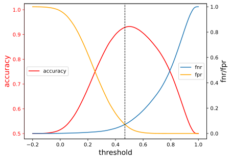
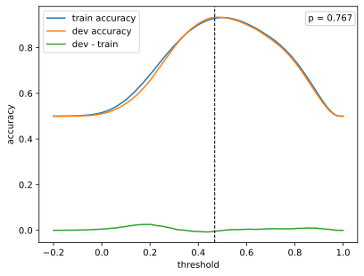
Figure 2: Accuracy, FPR, and FNR at different thresholds. Left plot: Training accuracy, FNR, and FPR. Right plot: Comparison of train and dev accuracy
Figure 2 shows the training accuracy, FNR, and FPR (left plot), and compares the training and dev accuracy (right plot). The vertical dashed line indicates the threshold. The threshold is set at 0.463, and we can see that there is no large difference in accuracy between the train and dev. This gives us confidence that the threshold we set is generalisable.
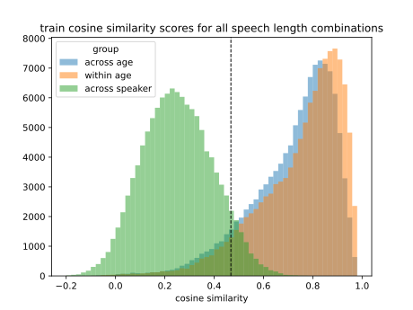
Figure 3: Cosine similarity scores for 3 groups: same-speaker same-age, same-speaker different-age, and different-speaker different-age.
Figure 3 shows the cosine similarity scores for the two same-speaker groups and the different-speaker different-age group. As we can see, the cosine similarity scores are generally higher when comparing the voiceprints of one speaker against each other. What we also see, however, is that when we introduce an age-gap between the voiceprints, that the cosine similarity scores drop slightly. This suggests that the voice aging does become slightly more dissimilar compared to the first recording.
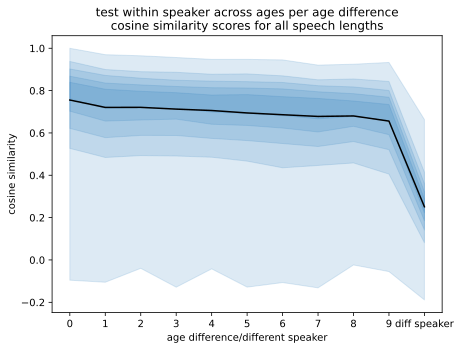
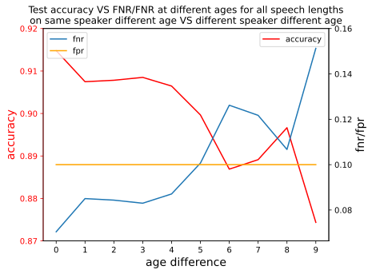
Figure 4: Effect of age-gap on cosine similarity, accuracy, FNR, and FPR scores. Left plot: Percentiles (at intervals of 10%) of cosine similarities for each age-gap, and comparing two different speakers. Right plot: Test accuracy, FNR, and FPR for each age-gap.
Figure 4 shows how the cosine similarity scores develop as the age-gap between two voiceprints increases (left plot), and also when comparing the voiceprints of two different speakers. In general, the cosine similarity seems to drop as the age-gap increases, but the cosine similarity is much lower when comparing two different speakers. The right hand side plot in the same figure shows how, as the age-gap between two voiceprints increases, the accuracy drops slightly, and experiences an even sharper drop around the 5-year age-gap. This is characterised by an increase in FNR as the age-gap increases.
In general, it seems to be the case that increasing the age-gap between two voiceprints does affect our ability to recognise that they come from the same speaker, and so some caution needs to be exercised when using someone’s voiceprint to recognise them at a very different point in time.
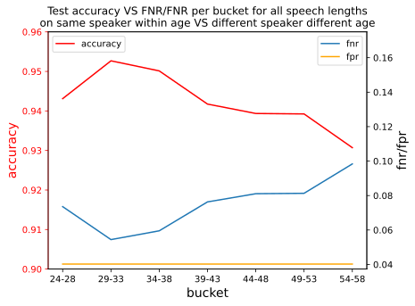
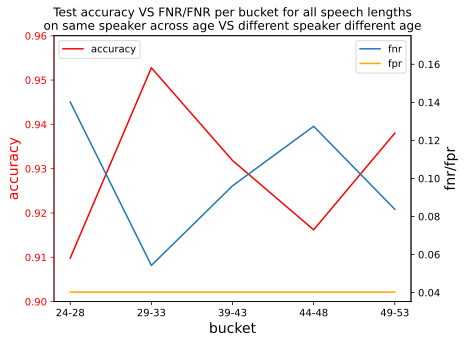
Figure 5: Effect of starting age on same-age and different-age scores. Left plot: Effect of starting age on same-age accuracy. Right plot: Effect of starting age on accuracy for a 9 year age-span.
Figure 5 shows that speakers in the 29-33 age-range are the easiest to recognise, and older and younger speakers are harder to recognise (left plot). However, the difference is not large. The right hand side plot uses different-age group for the same-speaker group. That is, the speaker verification is tested for this entire 9-year age-range for each speaker. We see that accuracy is highest when someone’s voiceprint is recorded in the 29-33 age-range and used for the next 9 years, and that it is lower for other age groups. Presumably this could be the case due to younger speakers’ voices still changing too much, and older speakers’ having begun to change again.
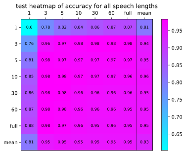
Figure 6: Heatmap of accuracy scores for all speech length comparisons.
Figure 6 shows that accuracy is very low when at least one of the two voiceprints in a pair comes from a 1-second long audio. It also shows that accuracy is slightly diminished when the pairs use longer audio.
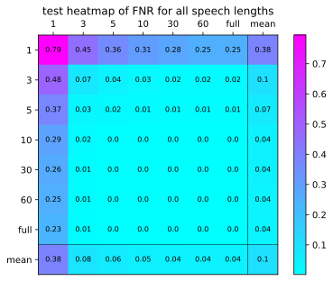
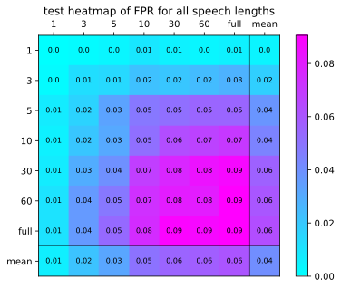
Figure 7: Heatmap of FNR and FPR scores for all speech length comparisons. Left plot: Heatmap of FNR for all speech length comparisons. Right plot: Heatmap of FPR for all speech length comparisons.
Figure 7 sheds some light on the accuracy scores. The very low performance of the short speeches seems to be attributable to a high FNR (left plot), meaning that we were much more likely to miss when two voiceprints belonged to the same person. The lower performance for longer audio lengths is attributable to a reduction in FPR (right plot): we were more likely to accidentally mark two unrelated speakers as being the same person.
Given all this, it might seem best to use speeches at around 3 seconds long: after all, these gave the best results, right? But that does not paint the whole story.
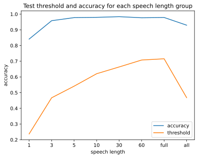
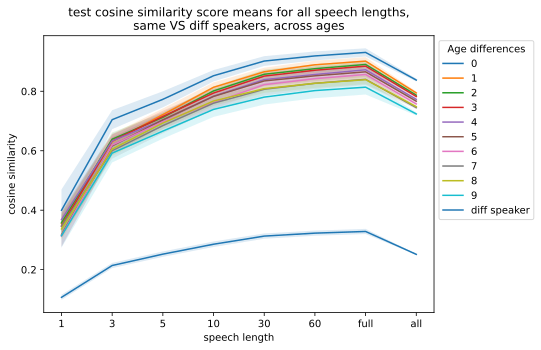
Figure 8: The effect of speech length on the threshold and cosine similarity. Left plot: The effect of speech length on threshold and the subsequent accuracy. Right plot: The effect of speech length and the age-gap on cosine similarity. Ranges represent 95% confidence intervals.
Figure 8 shows how, as we increase the audio length from which the voiceprints were extracted, the threshold is set higher as well (left plot). However, the corresponding accuracy is quite high, especially for voiceprint pairs extracted from speeches ranging from 5 seconds long to full-length speeches. The biggest dip in performance can be seen for voiceprint pairs extracted from 1-second long audio, and for “all” speech-length comparisons. When looking at the right hand side plot, we see that the cosine similarity increases for both the same-speaker and different-speaker voiceprint pairs, although moreso for the former group. It seems that voiceprint quality increases as the audio length from which they were extracted increases, resulting in the need to set a higher threshold to distinguish between the two groups. This also explains the reduced performance for the shortest audio lengths and for the mixed audio-length comparisons. For the short audio, the cosine similarities between the same- and different-speaker groups are considerably closer to each other, resulting in a larger overlap, and thereby worse performance. For the “all” group, the low threshold is still too high to correctly classify the voiceprints coming from 1-second long audio, but too low to correctly distinguish voiceprint pairs coming from longer audio. The overall impression these two graphs seem to give is that it is not necessarily that one needs longer audio for more accurate speaker verification, but rather that the threshold should be set and tested on voiceprints coming from audio of the same length.
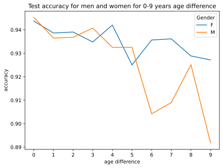
Figure 9: The effect of gender on speaker verification.
Figure 9 shows that as the age-gap between two voiceprints for the same speaker increases, the speaker verification drops at different rates for men and women after roughly 5 years, suggesting that it decreases more strongly for men.
Conclusion and future research
All in all, the results from this research suggests that voiceprints do age, and experience a sharper drop after the age-gap between two voiceprints reaches about 5 years. If a voiceprint is recorded between 29-33 years of age and used for the next 9, speaker verification retains a higher accuracy than if it is recorded at a different age. Using longer audio results in higher quality voiceprints, but it is also important to simply use and set thresholds on audio coming from the same length. However, mixing audio-length combinations still yields strong accuracy scores. Using very short audio yielded poor results, possibly due to the audio being extracted at random points from the speeches. Finally, male voiceprints might age faster than female voiceprints.
One thing that should be highlighted in this investigation, is that each age group was very small. Future research should endeavour to use larger groups to solidify the results obtained. Additionally, future research could increase the age-gap investigated, to see whether the general trend continues beyond this range. It would also be good to investigate both younger and older speakers. Additionally, we saw that voiceprints remain stable at different rates when recorded at different starting ages. It would be interesting to investigate what this range looks like for these age groups. Finally, given that speaker verification is quite accurate for shorter age-ranges, it would be interesting to combine the voiceprint from multiple ages to see whether that extends the number of years for which speaker verification remains accurate.
Code
The code for this project can be found at https://github.com/MKNachesa/masters_thesis.